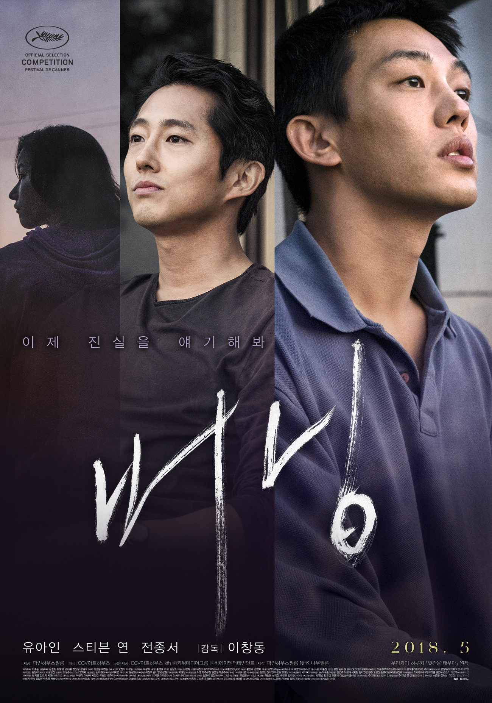
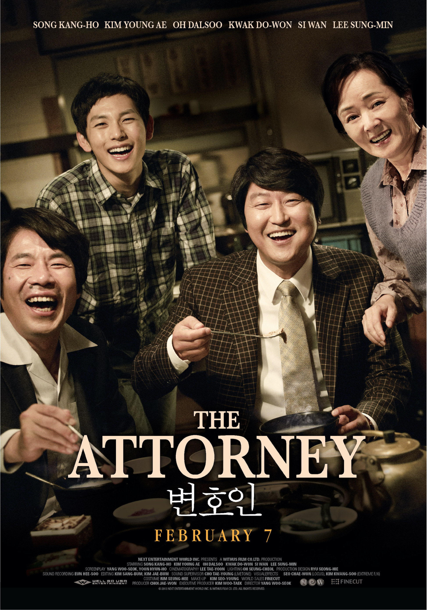

Gallery
Korean horror films have a special place in my heart. The Wailing was incredibly artistic and complex through its plot. Even by the end, I was gripped to the end of my seat. Many horror films overuse gore and jump scares, but films like this where the director scares the audience by plot is what really gets me.

Burning was an interesting film for me because Steven Yeun, a Korean American actor was on of the main characters despite the film being purely directed by Koreans. Historically, Steven Yeun acted for American films.

Parasite won 4 Oscars and was the first South Korean film to receive the Academy Award recognition. I was familiar with Bong Joon-ho's work before this film and I knew that he was destined for big things - it was only time before his work was properly recognized. This dark comedy and thriller had an incredible commentary on class, especially within Korean society.
The Attorney was one of the few films that really pulled some intense emotions from myself. Despite the positive vibe in the poster, this film was about the horrible torture that Korean students went through under the government. Korean historical films are always so interesting to me because it is crazy that these things happened only 40 years ago.